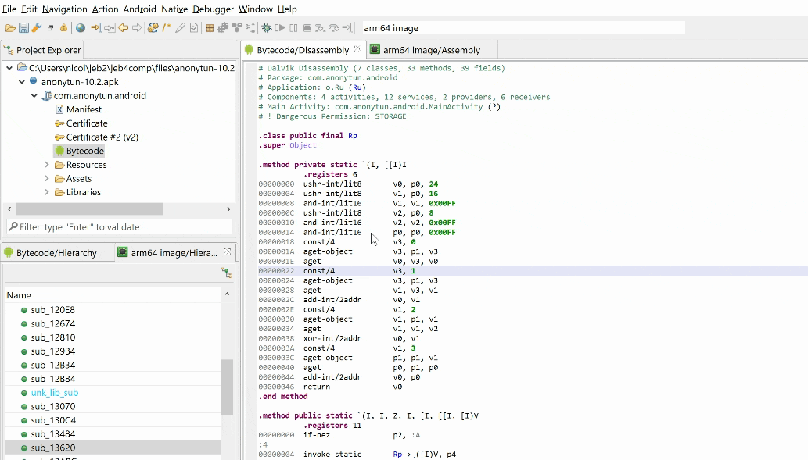

Use the Action menu, Toggle Highlight command (hotkey: Ctrl+M on Windows/Linux, Command+M on macOS) to toggle line highlights on and off. Like everything else, highlights can also be accessed programmatically (they are stored in unit metadata groups) and can be set via scripts, e.g. to automatically highlight areas of interest and make them pop-out during a quick visual pass.
